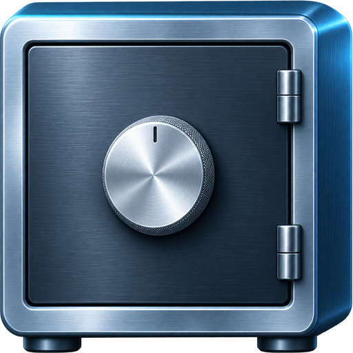

Bring your vault
Preview a Bitwarden JSON export before importing. Find what you need with search, folders and custom fields.
OPEN SOURCE · SELF-HOSTED
Keep passwords, secure notes, SSH keys and files in one place. Your device encrypts them before they sync to your server.

Preview a Bitwarden JSON export before importing. Find what you need with search, folders and custom fields.
Store encrypted attachments up to 100 MB each. Download on demand or keep selected files offline.
Download the Windows, Ubuntu, or Apple Silicon macOS app. You can also host the browser app separately.
HOW IT WORKS
This desktop prerelease is for self-hosters. Start with synthetic data and test your backup and recovery.